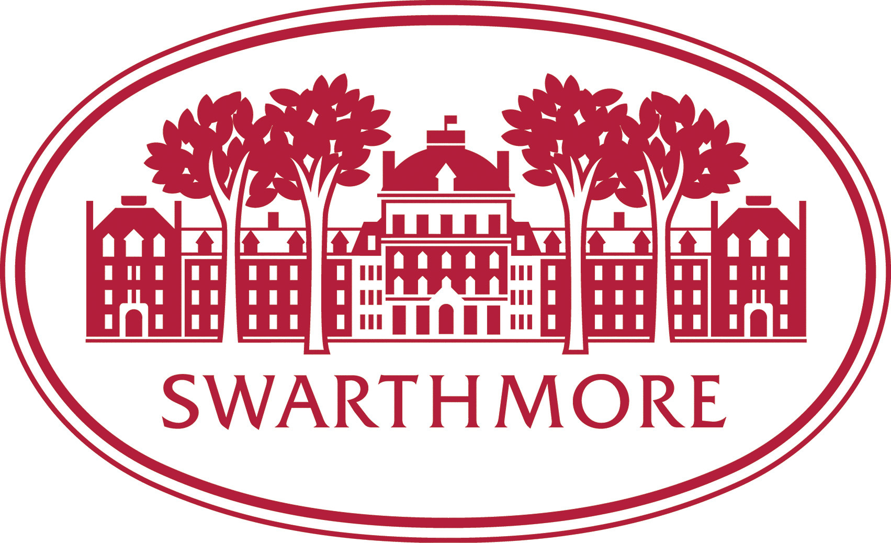
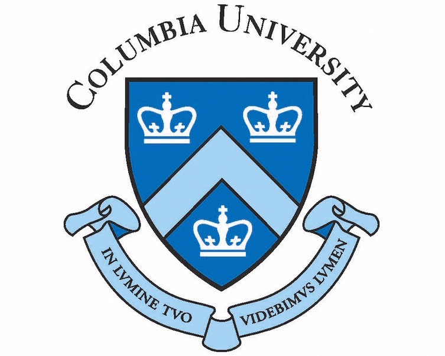
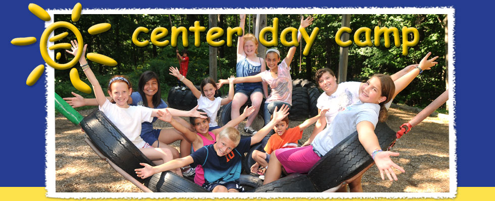

Places I've Studied

Swarthmore College
- Bachelor of Arts, Special Major in Computer Science and Educational Studies, June 2013. GPA: 3.53.
- Undergraduate Thesis: 'Preparing Students for the 21st Century with Scratch Computer Programming' (May 2013).
- Agora Talks Presenter

Columbia University
- Masters of Education, Teachers College, June 2017. GPA: TBD.
- New York State certified K-12 Technology Specialist
Places I've Worked
Qatar Foundation
- Technology Integration Facilitator (August 2014 - June 2015)
- Analyzed grade-level unit plans and suggested opportunities for technology integration during weekly PYP meetings.
- Supported classroom teachers by co-teaching lessons involving technology integration.
- Led professional development for faculty (SMART Board and Notebook, Google Apps, PowerSchool).
- Created digital How-To guides and step-by-step tutorials.
- Kindergarten Co-Teacher (August 2013 - July 2014)
- Assisted mentor teacher with literacy lessons and provided one-on-one reading support to struggling students.
- Taught kindergarten mathematics in an international school.
- Developed curriculum, scope, and sequence in line with Common Core standards.
Swarthmore College
- Held walk-in clinics for students in Single Variable Calculus and graded problem sets (September 2011 - December 2012).
- Held lab help sessions for students in Introduction to Computer Science (January 2011 - May 2011).

Center Day Camp
- Worked approximately 45 hours per week for five consecutive summers (2009-2013).
- Gained valuable skills and experience working with children 6-14 years old by helping them succeed in activities ranging from swimming to archery and by mediating social conflicts when they arose.
- Assisted an autistic boy with his personal and social needs throughout each day.